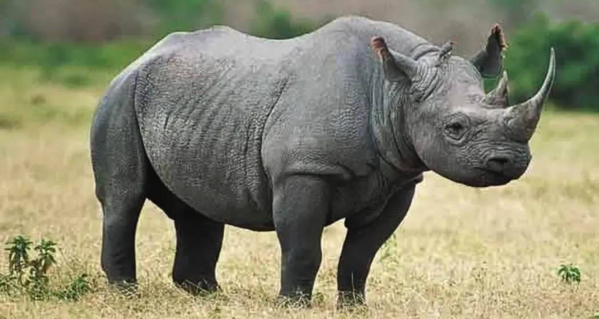

Indian One-Horned Rhinoceros: Conservation Profile
A massive, prehistoric-looking mammal with thick, gray-brown skin that appears armor-plated with deep folds and tubercles. Distinguished by a single black horn on the snout, it is a symbol of resilience and one of India's greatest conservation success stories.
Names and Scientific Classification
The Indian rhinoceros's scientific name, Rhinoceros unicornis, perfectly describes its most distinctive feature: a single horn on its nose. This name has been in use since the 14th century, highlighting its long-recognized uniqueness.
Scientific Name
Rhinoceros unicornis
Common English Names
Indian Rhinoceros, Greater One-Horned Rhinoceros, Great Indian Rhinoceros
The Rhino's Ancient Legacy
Scroll down to explore the Indian rhinoceros's evolutionary journey, its profound cultural significance, the threats it faces, and the dedicated conservation efforts to protect it.
Their Story - Origin, History & Historical Significance
Evolutionary Journey: The Indian rhinoceros belongs to an ancient lineage that dates back millions of years. The earliest remains of the genus Rhinoceros are known from the Late Miocene, with remains found in deposits in Myanmar dating to around 8-9 million years ago. These magnificent creatures represent one of the most successful megafauna lineages, having survived multiple ice ages and geological changes that eliminated many of their contemporaries. Scientific Discovery and Classification: The scientific name was proposed by Swedish taxonomist Carl Linnaeus in 1758. Several specimens were described since the end of the 18th century under different scientific names, which are all considered synonyms of Rhinoceros unicornis today, including R. indicus by Cuvier (1817), R. asiaticus by Blumenbach (1830), and others. The name rhinoceros has ancient roots: The generic name rhinoceros is derived through Latin from the Ancient Greek: ῥινόκερως, which is composed of ῥινο- (rhino-, "of the nose") and κέρας (keras, "horn") with a horn on the nose. The name has been in use since the 14th century. Historical Distribution and Cultural Significance: The Indian rhinoceros once had a vast range across the northern Indian subcontinent, from Pakistan in the west to Myanmar in the east, and from the Himalayan foothills in the north to the Ganges River delta in the south. Historical accounts from the Mughal period describe rhinoceros hunts and their presence in royal menageries. Cultural and Religious Importance: Ancient Literature: Referenced in Sanskrit texts as "Khadga" and "Ekashringa". Mughal Art: Featured prominently in Mughal paintings and court descriptions. Hindu Mythology: Associated with strength, power, and primordial forces. Buddhist Symbolism: Represents solitary spiritual practice and determination. Traditional Medicine: Horn historically valued in traditional medicine (now illegal). Historical Timeline: Prehistoric Era: Roamed across entire northern Indian subcontinent. 1758: First scientific description by Carl Linnaeus. 1800s: Extensive hunting begins during British colonial period. Early 1900s: Population reduced to fewer than 200 individuals. 1908: First protected area established (Kaziranga). 1975: Listed in CITES Appendix I. 1986: Classified as Endangered by IUCN. 2008: Status improved to Vulnerable due to conservation success. Cultural Legacy and Modern Recognition: The Indian rhinoceros has become a symbol of conservation success in Asia. From the brink of extinction with fewer than 200 individuals in the early 1900s, the species has recovered to over 3,500 individuals today, making it one of the greatest conservation success stories in the world. Modern Significance: Conservation Icon: Flagship species for Indian wildlife conservation. Ecotourism: Major draw for wildlife tourism in Assam and West Bengal. Scientific Research: Model species for large mammal conservation biology. Cultural Ambassador: Symbol of India's commitment to biodiversity conservation.
Cultural and Historical Significance
The Indian rhinoceros once had a vast range across the northern Indian subcontinent, from Pakistan in the west to Myanmar in the east, and from the Himalayan foothills in the north to the Ganges River delta in the south. Historical accounts from the Mughal period describe rhinoceros hunts and their presence in royal menageries. Cultural and Religious Importance: Ancient Literature: Referenced in Sanskrit texts as "Khadga" and "Ekashringa". Mughal Art: Featured prominently in Mughal paintings and court descriptions. Hindu Mythology: Associated with strength, power, and primordial forces. Buddhist Symbolism: Represents solitary spiritual practice and determination. Traditional Medicine: Horn historically valued in traditional medicine (now illegal). Historical Timeline: Prehistoric Era: Roamed across entire northern Indian subcontinent. 1758: First scientific description by Carl Linnaeus. 1800s: Extensive hunting begins during British colonial period. Early 1900s: Population reduced to fewer than 200 individuals. 1908: First protected area established (Kaziranga). 1975: Listed in CITES Appendix I. 1986: Classified as Endangered by IUCN. 2008: Status improved to Vulnerable due to conservation success. Cultural Legacy and Modern Recognition: The Indian rhinoceros has become a symbol of conservation success in Asia. From the brink of extinction with fewer than 200 individuals in the early 1900s, the species has recovered to over 3,500 individuals today, making it one of the greatest conservation success stories in the world. Modern Significance: Conservation Icon: Flagship species for Indian wildlife conservation. Ecotourism: Major draw for wildlife tourism in Assam and West Bengal. Scientific Research: Model species for large mammal conservation biology. Cultural Ambassador: Symbol of India's commitment to biodiversity conservation.
Poaching Incidents and Threats
Current Conservation Status: The Indian rhinoceros is listed as Vulnerable on the IUCN Red List, as the population is fragmented and restricted to less than 20,000 km2. As of August 2018, it was estimated to comprise 3,588 individuals. However, poaching remains a continuous threat. Poaching Reality and Scale: Poaching for the illegal trade in rhino horn remains the biggest threat to the greater one-horned rhino. The situation has seen both devastating periods and remarkable recovery phases. Traditional Threats: Indian rhinos are targeted by poachers due to the high value of their horns in traditional Chinese medicine. Due to the ancient belief in the healing and magical powers of their horn, poaching has become highly prevalent which has led to the decrease in their population. Conservation Success Story: However, there's encouraging news from recent years. In 2022, for the first time in 45 years, no greater one-horned rhinos were poached in the Indian state of Assam. This represents a remarkable turnaround in anti-poaching efforts. Historical Impact and Recovery: In the early 1990s, the global population was estimated at between 1,870 and 1,895 individuals. Since then, the population increased due to conservation measures taken by the governments. The current estimate of the Indian one-horned rhinoceros population is just 2,006 of which 81% live in Assam, and 75% of that figure survive in Kaziranga National Park, making this park fundamental to the survival of the species. Contemporary Threats and Challenges: Primary Threats: Poaching for Horn Trade: Despite legal protection, horn fetches high prices in illegal markets. Habitat Fragmentation: Agricultural expansion reducing corridor connectivity. Human-Wildlife Conflict: Crop raiding leading to retaliatory attacks. Floods: Climate change increasing frequency of devastating floods in Assam. Disease Outbreaks: Concentrated populations vulnerable to epidemics. Infrastructure Development: Roads, railways fragmenting habitat. Regional Vulnerability: Kaziranga National Park: Seasonal flooding displacing animals into human areas. Chitwan National Park (Nepal): Border trafficking challenges. Pobitora Wildlife Sanctuary: Overcrowding leading to territory conflicts. Orang National Park: Human encroachment pressure. Modern Anti-Poaching Efforts: Armed Forest Guards: 24/7 patrolling in rhino habitats. Technology Integration: Camera traps, drones, and GPS tracking. Community Involvement: Local communities engaged as conservation partners. Intelligence Networks: Coordinated efforts to break poaching syndicates. Legal Framework: Strict penalties under Wildlife Protection Act.
Conservation Timeline (Sanctuary Perspective)
Northeast India Rhinoceros Rescue & Rehabilitation Centre - Established 2016 2016 - Establishment and Emergency Response: Centre established near Kaziranga with capacity for 12 adult rhinoceros. First major rescue operation: 8 rhinos displaced by severe flooding. Veterinary unit equipped for treating gunshot wounds and snare injuries. Partnership with Assam Forest Department for rapid response protocols. 2017 - Infrastructure Development: Constructed 4 large enclosures (2 hectares each) with natural habitat features. Established specialized quarantine facility for new arrivals. First successful treatment of poaching victim: "Manas" - male with horn partially removed. Community outreach program launched in 25 villages around Kaziranga. 2018 - Research and Monitoring: GPS collar program initiated for tracking released animals. Behavioral study of human-rhino conflict patterns begun. Established mud wallowing pools and feeding stations matching wild conditions. First breeding success: "Brahmaputra" (female) gave birth to healthy calf. 2019 - Expansion and Partnerships: Opened satellite facility in Chitwan, Nepal for cross-border conservation. International collaboration with European zoos for genetic management. Treated record number of flood-displaced rhinos (14 individuals). Launched "Rhino Guardian" program employing 120 local youth. 2020 - Pandemic Challenges and Innovation: COVID-19 restrictions limited international support but increased local community involvement. Developed telemedicine protocols for veterinary consultations. Zero poaching incidents in areas covered by our patrol network. Successfully raised 6 orphaned calves to independence. 2021 - Advanced Conservation Methods: Implemented AI-powered anti-poaching surveillance system. Genetic sampling program to maintain population diversity. Cross-state translocation program to establish new populations. Community compensation scheme for crop damage by rhinos. 2022 - Historic Anti-Poaching Success: Contributed to Assam's achievement of zero rhino poaching for first time in 45 years. Established rapid response teams in 8 districts. Released 12 rehabilitated rhinos to protected areas with 100% survival rate. Advanced veterinary techniques for treating severe injuries. 2023 - Habitat Restoration Focus: Large-scale grassland restoration covering 800 hectares. Created 15 artificial wetlands for dry season habitat. Corridor restoration connecting fragmented populations. International training center for rhino conservation specialists. 2024 - Technology Integration: Drone surveillance network covering 1,200 sq km of rhino habitat. Real-time tracking system for 45 GPS-collared individuals. Mobile app for citizen reporting of rhino distress. Collaboration with tech companies for advanced monitoring systems. 2025 - Current Advanced Operations: State-of-the-art medical facility capable of complex surgeries. Breeding program maintaining genetic diversity across populations. Climate change adaptation strategies for flood-prone areas. Leading research on rhino behavior and ecological requirements. Women's Cooperatives: 45 self-help groups involved in organic farming Youth Rangers: 234 young people trained in wildlife monitoring Compensation Schemes: ₹15 million paid for crop damage and livestock losses The Indian rhinoceros represents one of conservation's greatest triumphs - proof that dedicated protection, community involvement, and scientific management can bring a species back from the very edge of extinction. Every individual we save carries the genetic legacy of millions of years of evolution and embodies the hope for wildlife conservation across Asia.
Cultural and Historical Significance in India
The Indian rhinoceros once had a vast range across the northern Indian subcontinent, from Pakistan in the west to Myanmar in the east, and from the Himalayan foothills in the north to the Ganges River delta in the south. Historical accounts from the Mughal period describe rhinoceros hunts and their presence in royal menageries. It is referenced in Sanskrit texts as "Khadga" and "Ekashringa," and associated with strength, power, and primordial forces in Hindu mythology. In Buddhist symbolism, it represents solitary spiritual practice and determination. Historically, its horn was valued in traditional medicine, though this practice is now illegal. The Indian rhinoceros has become a symbol of conservation success in Asia, recovering from fewer than 200 individuals in the early 1900s to over 3,500 today.
Primary Threats
50% Poaching for Horn Trade
25% Habitat Fragmentation
10% Human-Wildlife Conflict
10% Floods
5% Disease Outbreaks
Sanctuary Population (2025)
17% Adult Breeding Stock
12% Sub-adults
10% Juveniles/Calves
8% Rescued
6% Permanent Residents
47% Other
Conservation Impact
60% Successfully Released
20% Breeding Success
10% Habitat Restoration
10% Community Engagement
Northeast India Rhinoceros Rescue & Rehabilitation Centre Timeline
2016
Centre established near Kaziranga. First major rescue operation: 8 rhinos displaced by severe flooding.
2017
Infrastructure developed. First successful treatment of poaching victim: "Manas" with horn partially removed.
2018
GPS collar program initiated for tracking released animals. First breeding success: "Brahmaputra" gave birth to healthy calf.
2019
Satellite facility opened in Chitwan, Nepal. Launched "Rhino Guardian" program employing 120 local youth.
2020
COVID-19 restrictions led to zero poaching incidents in patrol areas. Successfully raised 6 orphaned calves.
2021
AI-powered anti-poaching surveillance system implemented. Cross-state translocation program established.
2022
Contributed to Assam's achievement of zero rhino poaching for the first time in 45 years.
2023
Large-scale grassland restoration covering 800 hectares. International training center for rhino conservation specialists.
2024
Drone surveillance network covering 1,200 sq km. Real-time tracking system for 45 GPS-collared individuals.
2025
State-of-the-art medical facility. Breeding program maintaining genetic diversity. Climate change adaptation strategies.